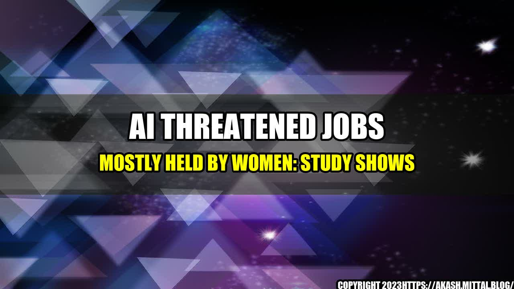

Women in Tech: AI Threatens Their Jobs
As artificial intelligence (AI) continues to advance, there is growing concern that it may pose a threat to jobs across various industries. A new study from the World Economic Forum (WEF) has shed light on the fact that AI is likely to impact jobs mostly held by women, creating another obstacle to gender equality in the workplace.
The study, titled "The Future of Jobs 2018," forecasts that by 2025, automation and AI will displace 75 million jobs and create 133 million new ones. While this may sound like a net gain, the reality is that many of the newly created jobs will require skills that few women currently possess. This means that women will be disproportionately affected by job displacement in the near future.
Which Jobs Are Most at Risk?
According to the WEF study, the jobs most at risk of displacement due to automation and AI are those that involve routine and repetitive tasks. Many of these jobs, such as data entry and administrative duties, happen to be those that are predominantly held by women.
Other jobs that are at risk include those in the retail and customer service industries, where chatbots and other customer service technologies are beginning to replace human employees. These jobs, too, are often held by women.
However, it's not all bad news. The same study found that jobs that require greater social and emotional intelligence, which are typically associated with women, are less likely to be impacted by automation and AI.
What Can Women Do to Prepare for These Changes?
If you're a woman in a job that's at risk of being automated, it's important to start thinking about how you can upskill or reskill to prepare for the changes ahead. Here are a few tips to consider:
- Find out which skills will be in demand in your industry: Research the types of skills that your industry will need in the future, and focus on developing them. This could include skills related to data analysis, digital marketing, or coding.
- Take advantage of online learning platforms: There are a wealth of online learning platforms that offer courses in various skills, often for free or at a low cost. Do some research and find courses that will help you develop the skills you need to stay relevant in your industry.
- Network with industry professionals: Attend industry events, join relevant groups on social media, and connect with professionals in your field. This will help you stay up-to-date on the latest trends and job opportunities.
- Consider transitioning to a job that requires greater social and emotional intelligence: If you're worried about your job being automated, consider transitioning to a job that requires skills that are less likely to be automated. For example, you could explore a career in nursing, teaching, or counseling.
Conclusion
In conclusion, the rise of artificial intelligence poses a threat to jobs mostly held by women. While this may seem like an insurmountable obstacle, there are steps that women can take to prepare for these changes. By focusing on upskilling and reskilling, networking with industry professionals, and considering a career transition, women can stay relevant in their industries and continue to advance their careers.
- Reference URLs:
- https://www.weforum.org/reports/the-future-of-jobs-2018
- https://www.cnbc.com/2018/09/18/women-more-than-men-face-automation-threat-for-jobs-study-says.html
- Hashtags: #AI #artificialintelligence #womenintech #jobthreats #careeradvice
- Article Category: Career Development
Curated by Team Akash.Mittal.Blog
Share on Twitter Share on LinkedIn